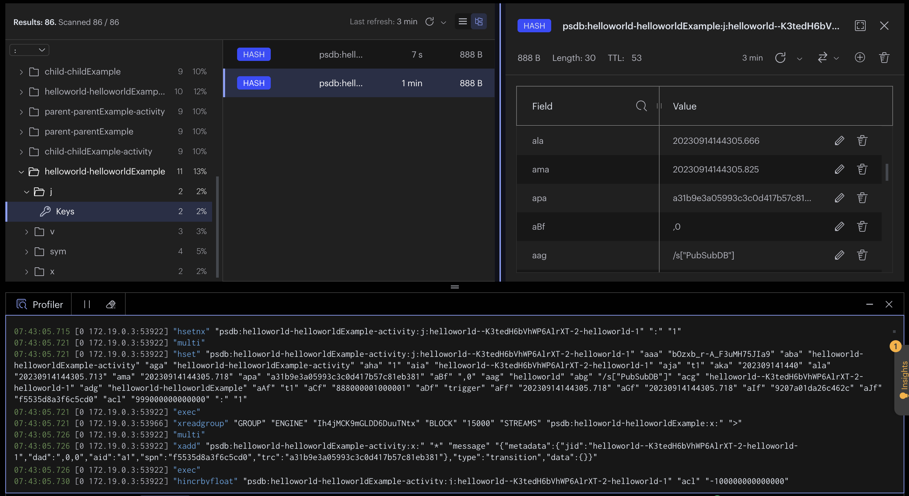

@hotmeshio/hotmesh
HotMesh

HotMesh transforms Redis into indispensable Middleware. Effortlessly connect everything.
Install
npm install @hotmeshio/hotmesh
You have a Redis instance? Good. You're ready to go.
MeshCall
The MeshCall module connects any function to the mesh. Calls are brokered via Redis Streams, reducing the overhead of HTTP without backpressure risk.
Call a function in another service
Overview
Make blazing fast interservice calls that return in milliseconds without the overhead of HTTP.
-
Use
MeshCall.connectto link your function. Choose atopicto identify it and anamespaceto group related functions. Replacecallbackwith your function logic. Return the response; thedatafield is your payload.//myFunctionWrapper.ts
import { MeshCall } from '@hotmeshio/hotmesh';
import * as Redis from 'redis';
export const connectMyFunction = () => {
MeshCall.connect({
namespace: 'sandbox',
topic: 'my.serviceb.function',
redis: {
class: Redis,
options: { url: 'redis://:key_admin@localhost:6379' }
},
callback: async (input: StreamData) => {
//return the response; data field is your payload
return {
metadata: { ...input.metadata },
data: { youSent: input.data.IamSending }
};
},
});
}; -
Call
connectMyFunctiononce at server startup to connect your function to the mesh.//server.ts
import { connectMyFunction } from './myFunctionWrapper';
connectMyFunction(); -
Call your function from anywhere on the network (or even the same service). Send any payload as long as it's JSON serializable.
import { MeshCall } from '@hotmeshio/hotmesh';
import * as Redis from 'redis';
const result = await MeshCall.exec({
namespace: 'sandbox',
topic: 'my.serviceb.function',
payload: { IamSending: 'something' },
redis: {
class: Redis,
options: { url: 'redis://:key_admin@localhost:6379' }
},
}); //returns `{ youSent: 'something'}`
Call and cache a function
Overview
Redis is great for unburdening stressed services. This solution builds upon the previous example, caching the response. The linked function will only be re/called when the cached result expires. Everything remains the same, except the caller which specifies a ttl.
-
Make the call from another service (or even the same service). Include a
ttlto cache the result for the specified duration.import { MeshCall } from '@hotmeshio/hotmesh';
import * as Redis from 'redis';
const result = await MeshCall.exec({
namespace: 'sandbox',
topic: 'my.serviceb.function',
payload: { IamSending: 'something' },
redis: {
class: Redis,
options: { url: 'redis://:key_admin@localhost:6379' }
},
options: { ttl: '15 minutes' },
}); //returns `{ youSent: 'something'}`
Run a cron job
Overview
This example demonstrates an idempotent cron that runs every day. Optionally set maxCycles or maxDuration to limit the number of cycles. Use your chosen id to cancel the cron job.
-
Define the cron function.
//cron.ts
import { MeshCall } from '@hotmeshio/hotmesh';
import * as Redis from 'redis';
export const runMyCron = () => {
MeshCall.cron({
namespace: 'sandbox',
topic: 'my.cron.function',
redis: {
class: Redis,
options: { url: 'redis://:key_admin@localhost:6379' }
},
callback: async () => {
//run your cron function
},
options: {
id: 'myDailyCron',
interval: '1 day'
}
});
}; -
Call
runMyCrononce at server startup or call as needed.//server.ts
import { runMyCron } from './cron';
runMyCron();
Interrupt a cron job
MeshFlow
The MeshFlow module is designed as a drop-in replacement for Temporal.io. If you need to orchestrate your functions as durable workflows, MeshFlow provides a familiar set of tools with in-memory execution speed.
Orchestrate unpredictable activities
Overview
When an endpoint is unpredictable, use proxyActivities; HotMesh will retry as necessary until it succeeds. This example demonstrates a simple workflow that greets a user in both English and Spanish. But both only succeed 50% of the time.
-
Start by defining activities. Note how each throws an error 50% of the time.
//activities.ts
export async function greet(name: string): Promise<string> {
if (Math.random() > 0.5) throw new Error('Random error');
return `Hello, ${name}!`;
}
export async function saludar(nombre: string): Promise<string> {
if (Math.random() > 0.5) throw new Error('Random error');
return `¡Hola, ${nombre}!`;
} -
Define the workflow logic. Include conditional branching, loops, etc to control activity execution. It's vanilla code written in your own coding style. The only requirement is to use
proxyActivities, ensuring your activities are executed with HotMesh's durability guarantee.//workflows.ts
import { MeshFlow } from '@hotmeshio/hotmesh';
import * as activities from './activities';
const { greet, saludar } = MeshFlow.workflow
.proxyActivities<typeof activities>({
activities
});
export async function example(name: string): Promise<[string, string]> {
return Promise.all([
greet(name),
saludar(name)
]);
} -
Instance a HotMesh client to invoke the workflow.
//client.ts
import { MeshFlow, HotMesh } from '@hotmeshio/hotmesh';
import Redis from 'ioredis';
async function run(): Promise<string> {
const client = new MeshFlow.Client({
connection: {
class: Redis,
options: { host: 'localhost', port: 6379 }
}
});
const handle = await client.workflow.start<[string,string]>({
args: ['HotMesh'],
taskQueue: 'default',
workflowName: 'example',
workflowId: HotMesh.guid()
});
return await handle.result();
//returns ['Hello HotMesh', '¡Hola, HotMesh!']
} -
Finally, create a worker and link the workflow function. Workers listen for tasks on their assigned Redis stream and invoke the workflow function each time they receive an event.
//worker.ts
import { MeshFlow } from '@hotmeshio/hotmesh';
import Redis from 'ioredis';
import * as workflows from './workflows';
async function run() {
const worker = await MeshFlow.Worker.create({
connection: {
class: Redis,
options: { host: 'localhost', port: 6379 },
},
taskQueue: 'default',
workflow: workflows.example,
});
await worker.run();
}
Pause and wait for a signal
Wait for multiple signals (collation)
Create a recurring, cyclical workflow
MeshData
The MeshData service extends the MeshFlow service, combining data record concepts and transactional workflow principles into a single "Operational Data Layer" (ODL). Deployments with the Redis FT.SEARCH module enabled can use MeshData to merge OLTP and OLAP operations into a single operational data layer.
Create an indexed, searchable record
Attach recurring, cyclical subflows to a record
Transactionally update a record
Run real-time aggregation Statistics
Visualize | OpenTelemetry
Add your Honeycomb credentials to .env, and view the full OpenTelemetry execution tree organized as a DAG.

Visualize | RedisInsight
View commands, streams, data, etc using RedisInsight.
Visualize | HotMesh Dashboard
The HotMesh dashboard provides a visual representation of the network, including the number of engines, workers, and workflows. It also provides a real-time view of the network's health and performance, linking to the OpenTelemetry dashboard for more detailed information.
An LLM is also included to simplify querying and analyzing workflow data for those deployments that include the Redis FT.SEARCH module.

Understanding HotMesh
HotMesh inverts the relationship to Redis: those functions that once used Redis as a cache, are instead cached and governed by Redis. Consider the following. It's a typical microservices network, with a tangled mess of services and functions. There's important business logic in there (functions A, B and C are critical), but it's hard to find and access.

HotMesh creates an ad hoc, Redis-backed network of functions and organizes them into a unified service mesh. Any service with access to Redis can join in the network, bypassing the legacy clutter.
Workflow Extensions
Externalizing state fundamentally changes the execution profile for your functions, allowing you to design long-running, durable workflows. The MeshFlow base class (shown in the examples above) provides additional methods for solving the most common state management challenges.
waitForPause your function using your chosen signal key, and only awaken when the signal is received from the outide. Use a standardPromiseto collate and cache the signals and only awaken your function once all signals have arrived.const { waitFor } = MeshFlow.workflow;
const [a, b] = await Promise.all([
waitFor<{payload: string}>('sig1'),
waitFor<number>('sig2')
]);signalSend a signal (and payload) to a paused function awaiting the signal. Signals may also be sent from the outside to awaken a paused function.await MeshFlow.workflow.signal('sig1', {payload: 'hi!'});hookRedis governance converts your functions into 're-entrant processes'. Optionally use the hook method to spawn parallel execution threads to augment a running workflow.await MeshFlow.workflow.hook({
workflowName: 'newsletter',
taskQueue: 'default',
args: []
});sleepForPause function execution for a ridiculous amount of time (months, years, etc). There's no risk of information loss, as Redis governs function state. When your function awakens, function state is efficiently (and automatically) restored and your function will resume right where it left off.await MeshFlow.workflow.sleepFor('1 month');randomGenerate a deterministic random number that can be used in a reentrant process workflow (replacesMath.random()).const random = await MeshFlow.workflow.random();execChildCall another durable function and await the response. Design sophisticated, multi-process solutions by leveraging this command.const jobResponse = await MeshFlow.workflow.execChild({
workflowName: 'newsletter',
taskQueue: 'default',
args: [{ id, user_id, etc }],
});startChildCall another durable function, but do not await the response.const jobId = await MeshFlow.workflow.startChild({
workflowName: 'newsletter',
taskQueue: 'default',
args: [{ id, user_id, etc }],
});getContextGet the current workflow context (workflowId, replay history, replay index, etc).const context = await MeshFlow.workflow.getContext();searchInstance a search sessionconst search = await MeshFlow.workflow.search();setSet one or more name/value pairsawait search.set('name1', 'value1', 'name2', 'value2');getGet a single value by nameconst value = await search.get('name');mgetGet multiple values by nameconst [val1, val2] = await search.mget('name1', 'name2');delDelete one or more entries by name and return the number deletedconst count = await search.del('name1', 'name2');incrIncrement (or decrement) a numberconst value = await search.incr('name', 12);multMultiply a numberconst value = await search.mult('name', 12);
Refer to the hotmeshio/samples-javascript repo for usage examples.
Design | Advanced
The Pluck and MeshFlow modules are the easiest way to use HotMesh. But if you need full control over your function lifecycles (including high-volume, high-speed use cases), you can use HotMesh's underlying YAML models to optimize your durable workflows. The following model depicts a sequence of activities orchestrated by HotMesh. Any function you associate with a topic in your YAML definition is guaranteed to be durable.
app:
id: sandbox
version: '1'
graphs:
- subscribes: sandbox.work.do
publishes: sandbox.work.done
activities:
gateway:
type: trigger
servicec:
type: worker
topic: sandbox.work.do.servicec
serviced:
type: worker
topic: sandbox.work.do.serviced
sforcecloud:
type: worker
topic: sandbox.work.do.sforcecloud
transitions:
gateway:
- to: servicec
servicec:
- to: serviced
serviced:
- to: sforcecloud
Initialize
Provide your chosen Redis instance and configuration options to start a HotMesh Client. HotMesh supports both ioredis and redis clients interchangeably.
import { HotMesh } from '@hotmeshio/hotmesh';
import Redis from 'ioredis'; //OR `import * as Redis from 'redis';`
const hotMesh = await HotMesh.init({
appId: 'sandbox',
engine: {
redis: {
class: Redis,
options: { host, port, password, db } //per your chosen Redis client
}
}
});
A HotMesh Client can be used to trigger worfkows and subscribe to results.
Trigger a Workflow
Call pub to initiate a workflow. This function returns a job ID that allows you to monitor the progress of the workflow.
const topic = 'sandbox.work.do';
const payload = { };
const jobId = await hotMesh.pub(topic, payload);
Subscribe to Events
Call psub (patterned subscription) to subscribe to all workflow results for a given topic.
await hotMesh.psub('sandbox.work.done.*', (topic, jobOutput) => {
// use jobOutput.data
});
Trigger and Wait
Call pubsub to start a workflow and wait for the response. HotMesh establishes a one-time subscription and delivers the job result once the workflow concludes.
const jobOutput = await hotMesh.pubsub(topic, payload);
The
pubsubmethod is a convenience function that merges pub and sub into a single call. Opt for HotMesh's queue-driven engine over fragile HTTP requests to develop resilient solutions.
Link Worker Functions
Link worker functions to a topic of your choice. When a workflow activity in the YAML definition with a corresponding topic runs, HotMesh will invoke your function, retrying as configured until it succeeds.
import { HotMesh } from '@hotmeshio/hotmesh';
import Redis from 'ioredis';
const hotMesh = await HotMesh.init({
appId: 'sandbox',
workers: [
{
topic: 'sandbox.work.do.servicec',
redis: {
class: Redis,
options: { host, port, password, db }
}
callback: async (input: StreamData) => {
return {
metadata: { ...input.metadata },
data: { }
};
}
}
]
};
Observability
Workflows and activities are run according to the rules you define, offering Graph-Oriented telemetry insights into your legacy function executions.
FAQ
Refer to the FAQ for terminology, definitions, and an exploration of how HotMesh facilitates orchestration use cases.
Quick Start
Refer to the Quick Start for sample YAML workflows you can copy, paste, and modify to get started.
Developer Guide
For more details on the complete development process, including information about schemas, APIs, and deployment, consult the Developer Guide.
Model Driven Development
Model Driven Development is an established strategy for managing process-oriented tasks. Check out this guide to understand its foundational principles.
Data Mapping
Exchanging data between activities is central to HotMesh. For detailed information on supported functions and the functional mapping syntax (@pipes), see the Data Mapping Overview.
Composition
While the simplest graphs are linear, detailing a consistent sequence of non-cyclical activities, graphs can be layered to represent intricate business scenarios. Some can even be designed to accommodate long-lasting workflows that span months. For more details, check out the Composable Workflow Guide.
System Lifecycle
Gain insight into HotMesh's monitoring, exception handling, and alarm configurations via the System Lifecycle Guide.
Distributed Orchestration | System Overview
HotMesh is a distributed orchestration engine. Refer to the Distributed Orchestration Guide for a high-level overview of the approach.
Distributed Orchestration | System Design
HotMesh is more than Redis and TypeScript. The theory that underlies the architecture is applicable to any number of data storage and streaming backends: A Message-Oriented Approach to Decentralized Process Orchestration.